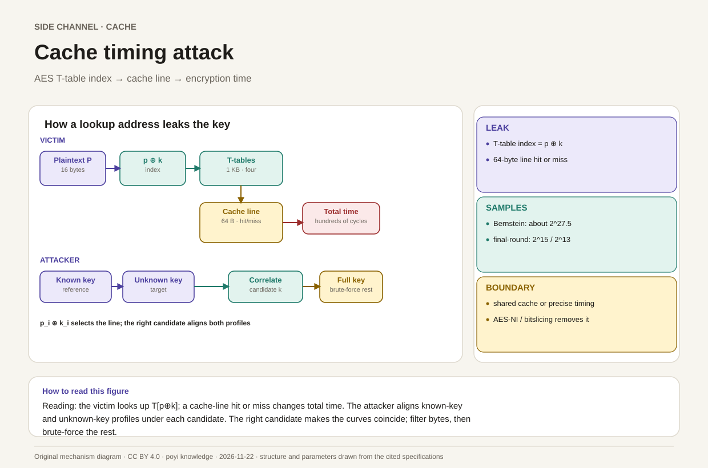
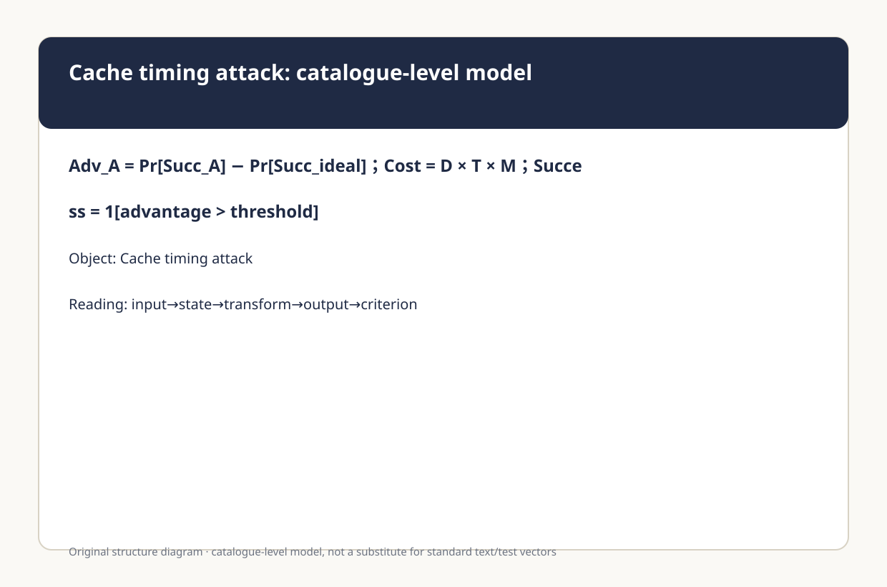

Principles
Attack: Cache Timing Attack (缓存计时攻击). ### Table lookups carry the key into the cache
AES software often uses four T-tables, each 256 entries of 4 bytes, about 1 KB total. The CPU fetches a 64-byte cache line; a hit or miss changes the encryption time by hundreds of cycles. In the first round the lookup index is p_i ⊕ k_i, so changing plaintext p lets the attacker observe which index is cached. ### From time to key
The attacker first profiles “plaintext byte versus time” on a similar machine with a known key, then samples the unknown key and correlates the two profiles under each key hypothesis. The correct hypothesis aligns the cache patterns; wrong ones do not. After filtering byte candidates, a known plaintext-ciphertext pair brute-forces the remaining bits.

Why it matters
Fast AES software depends on S-box/T-table lookups, and the lookup address is determined by key and plaintext. To be both fast and safe, memory access time must be independent of the address; on a general-purpose CPU that is difficult, and constant-time code is often much slower. Leakage exists whenever the target shares a cache with the attacker or the attacker can time encryption precisely.
Bernstein's 2005 experiment sent requests over a network to an OpenSSL server from another machine and recovered the full AES key from response time alone. Network jitter dilutes the signal, but enough samples still expose the statistical difference; this is the origin of the term “remote timing attack”.
Applications
Cache attacks apply across processes, virtual machines, cloud co-tenancy, browser timing and embedded devices. They do not require reading the victim's memory, only a shared cache level and a fine-grained timing source; variants such as Flush+Reload reduce noise further.
Prefer constant-time hardware instructions such as AES-NI; software can use bitslicing, Boolean S-boxes or implementations that avoid secret indices. Systems can add cache colouring, core isolation, timing-source randomisation and noise. Defenders must consider performance, not merely replace table lookups with slow bit-by-bit operations.
A shared name may belong to an algorithm, standard, event, person or term; this entry is responsible only for its catalogue binding and does not absorb adjacent records. If versions, regions or institutions define the name differently, the differences stay side by side.

Limits & attacks
Bernstein's original attack needed about 2^27.5 plaintext/timing samples and required the reference and target machines to match closely in software, CPU and background load. Bonneau–Mironov moved the attack to the final round and recovered the full key with about 2^15 samples, or about 2^13 for the expanded final round; fewer samples, but still precise timing and a matched environment.
AES-NI, constant-time bitsliced implementations and hardware coprocessors with no secret-indexed tables do not emit this cache signal. The attack mainly hits fast T-table software AES, especially old OpenSSL, cross-process shared caches and multi-tenant cloud hosts.
History
Daniel J. Bernstein published “Cache-timing attacks on AES” in 2005, recovering a full 128-bit AES key from a network server running OpenSSL 0.9.7a on a Pentium III, with reproducible code. This is the landmark cache-timing attack.
Osvik–Shamir–Tromer introduced Prime+Probe and cache collisions in 2006; Bonneau–Mironov used final-round collisions to cut samples to 2^15/2^13; Yarom–Falkner's 2014 Flush+Reload pushed resolution to the cache-line level. Meltdown/Spectre later made cache side channels a central general-purpose CPU security issue.
Worked example & verification
Formal model and reproduction steps
[\mathrm{Adv}^{\mathrm{attack}}_A(\lambda)=\Pr[\mathrm{Game}_A(\lambda)=1]-\frac12]
Cache Timing Attack: the registered public parameters, key material or randomness, and message are mapped through the stated transformation to an output checked against the registered criterion. The worked example is a structural reproduction, not a new test vector; parameter ranges, standard versions and implementation details remain source-bound.
References
- Wikipedia search entry for 缓存计时攻击. https://zh.wikipedia.org/w/index.php?search=%E7%BC%93%E5%AD%98%E8%AE%A1%E6%97%B6%E6%94%BB%E5%87%BB
- Handbook of Applied Cryptography (Menezes, van Oorschot, Vanstone). https://www.cacr.math.uwaterloo.ca/hac/